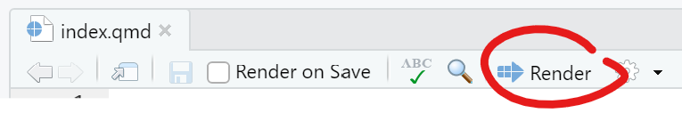
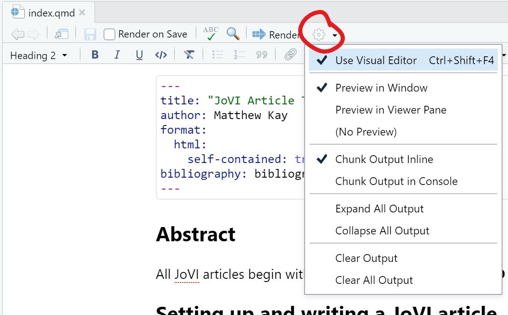

Setting up and writing a JoVI article
JoVI articles are written in Quarto, which is a simple markdown-based text format. This template outlines some of the features that are most useful for writing academic articles in Quarto; for more visit https://quarto.org.
You can find the source for this article in the journalovi/jovi-template-quarto repository on Github. To create a new JoVI article, we recommend following these steps:
Install Quarto by following these instructions.
Create a new git repository to hold your article by forking our template repository.
You can then edit index.qmd in your new repository to write your paper. There are several options for editing and rendering the paper:
You can execute quarto serve from the commandline to render the paper to index.html and preview it in the browser.
You can edit the paper in RStudio and render it by clicking on the Render button: 
If you plan to use RStudio, read more about RStudio and Quarto here. In particular, you should install RStudio > version 1.5, which as of this writing requires installing the latest “daily” version of RStudio. If you do, you can also enable the visual editor:

Body text
The basic body text, header formatting, and basic tags such as links, emphasis, etc should be left as-is except in rare cases (for which you should be able to demonstrate the value of your modifications). That said, we do encourage experimentation with what is possible in this format; some possibilities that just scrath the surface include: using color or other formatting to link text content semantically with figures; using inline figures; experimenting with interactive widgets in text and figures. So long as content retains archivability, accessibility, and readability, we welcome experimentation with the format.